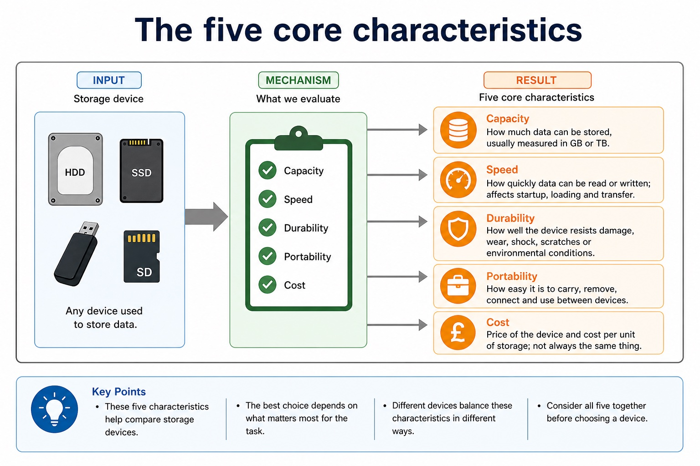

Logic-gate symbols, functions and representation conversions
Use the standard symbols and exact functions of NOT, AND, OR, NAND, NOR and XOR (EOR). NOT has one input; each of the other five gates has two inputs for this syllabus. A truth table lists every input combination and the resulting output according to the gate or circuit function.
You must be able to construct a logic circuit from a problem statement, logic expression or truth table; construct a truth table from a problem statement, logic circuit or logic expression; and construct a logic expression from a problem statement, logic circuit or truth table. Move through variables and conditions first, then intermediate gate outputs, then the final output so every representation can be checked against the same rows.
Use the standard symbol for each logic gate as well as its function, Boolean expression, circuit and truth table.
Worked example: Convert one rule among four representations
Rule: an alarm sounds when the system is armed and either the door or window is open. Define A, D and W; write Alarm = A AND (D OR W); draw an OR gate for D and W feeding an AND gate with A; then list all eight input combinations and evaluate the intermediate OR column before Alarm.
Six symbols, six exact output rules
Six symbols, six exact output rules: source-grounded visual explanation.
Lesson fact: Visual explanation
Lesson fact: Read each symbol from left to right. A small circle on the output means “invert”; the extra curved input line distinguishes XOR from OR.
Lesson fact: NOT One input; output is the opposite value.
Lesson fact: AND / NAND AND tests whether both are 1; NAND inverts that result.
Lesson fact: OR / NOR OR tests whether at least one is 1; NOR inverts that result.
Lesson fact: XOR Output is 1 only when the two inputs are different.
Lesson fact: Check the diagram: what two visual clues separate NOR from XOR?
Lesson fact: NOR has an output bubble. XOR has no output bubble, but it has an extra curved line on the input side.
Core syllabus practice
Logic-gate symbols, functions and representation conversions: apply and assess
Targeted practice
1. What distinguishes the XOR symbol from the OR symbol?
Show answer
XOR has an additional curved line on the input side.
2. How many inputs does NOT have, and how many do the other specified gates have in this syllabus?
Show answer
NOT has one input; AND, OR, NAND, NOR and XOR each have two inputs.
3. Identify the three possible sources from which a logic circuit may be constructed.
Show answer
A problem statement, a logic expression or a truth table.
4. How do intermediate columns help convert a circuit into a truth table?
Show answer
Each intermediate column records one gate output, allowing the final result to be calculated and checked row by row.
Exam-style question
4 marks
A truth table gives output 1 only when input A is 1 and input B is 0. Construct a logic expression and describe the corresponding circuit.
Show MS
Answer
Guidance
Marks
identifies that B must be inverted
Do not accept XOR: XOR is also 1 for A=0, B=1, which contradicts the given truth table.
1
constructs expression Q = A AND NOT B
1
B is connected to a NOT gate
1
A and the NOT-gate output are connected to an AND gate whose output is Q
1
Lesson 032 | 45 minutes | Paper 1 Section 3
Storage choice is a trade-off, not a popularity contest.
This lesson trains the comparison language needed for storage questions:
capacity, speed, durability, portability and cost. The goal is to justify
a choice for a specific user, not to declare one storage type "best".
Definefive key storage characteristics accurately
Comparestorage devices using scenario-linked trade-offs
WriteCambridge-style justifications with cause and consequence
"Best storage" without a scenario is like "best shoe" without saying hiking, running or wedding.
Why this matters
CIE marking is strict with vague claims. "Efficient" or "better" usually needs a named characteristic and a scenario consequence.
Common error
Students often compare only speed. Capacity, durability, portability and cost can be the real deciding factors.
Warm-up hook
Choose storage for a travel photographer: huge photo library, rough travel bag, limited budget and quick editing. Which feature matters most?
Click one feature. Good answers often combine two features, then explain the trade-off.
Knowledge point 1
The five core characteristics
CapacityHow much data can be stored, usually measured in GB or TB.SpeedHow quickly data can be read or written; affects startup, loading and transfer.DurabilityHow well the device resists damage, wear, shock, scratches or environmental conditions.PortabilityHow easy it is to carry, remove, connect and use between devices.CostPrice of the device and cost per unit of storage; not always the same thing.
Chinese support: capacity = 容量；speed = 速度；durability = 耐用性；portability = 便携性；cost per GB = 每 GB 成本。
The five core characteristics

The five core characteristics: source-grounded visual explanation.
Lesson fact: Capacity How much data can be stored, usually measured in GB or TB.
Lesson fact: Speed How quickly data can be read or written; affects startup, loading and transfer.
Lesson fact: Durability How well the device resists damage, wear, shock, scratches or environmental conditions.
Lesson fact: Portability How easy it is to carry, remove, connect and use between devices.
Lesson fact: Cost Price of the device and cost per unit of storage; not always the same thing.
Knowledge point 2
Trade-offs by common storage device
Device
Strengths
Weaknesses
Suitable when...
HDD
High capacity; low cost per GB.
Moving parts; slower; less shock-resistant than SSD.
Large storage is needed cheaply and portability is less critical.
SSD
Fast; durable; no moving parts; low power.
Often higher cost per GB than HDD.
Speed and durability matter, especially in laptops.
Magnetic tape
Very high capacity; low cost for archives.
Slow sequential access; not convenient for frequent random access.
Huge backups are rarely accessed.
Optical disc
Cheap removable media; useful for fixed offline copies.
Lower capacity; slower; can scratch.
Data rarely changes and low-cost distribution matters.
USB flash / memory card
Very portable and removable; no moving parts.
Small devices can be lost; speed and quality vary.
Files need to be moved between devices or used in cameras/phones.
Trade-offs by common storage device
Trade-offs by common storage device: source-grounded visual explanation.
Lesson fact: Strengths
Lesson fact: Weaknesses
Lesson fact: Suitable when...
Lesson fact: High capacity; low cost per GB.
Lesson fact: Moving parts; slower; less shock-resistant than SSD.
Lesson fact: Large storage is needed cheaply and portability is less critical.
Lesson fact: Fast; durable; no moving parts; low power.
Lesson fact: Often higher cost per GB than HDD.
Lesson fact: Speed and durability matter, especially in laptops.
Lesson fact: Magnetic tape
Lesson fact: Very high capacity; low cost for archives.
Lesson fact: Slow sequential access; not convenient for frequent random access.
Knowledge point 3
The answer pattern: choice -> characteristic -> context -> consequence
ChoiceUse an SSD
Characteristicbecause it has fast access and no moving parts
Contextfor a laptop carried to school each day
Consequenceso programs load quickly and it is less likely to be damaged by knocks
Weak: "SSD is better." Strong: "SSD is suitable because fast access reduces loading time and no moving parts improves durability in a portable laptop."
The answer pattern: choice -> characteristic -> context -> consequence
Lesson fact: Characteristic because it has fast access and no moving parts
Lesson fact: Context for a laptop carried to school each day
Lesson fact: Consequence so programs load quickly and it is less likely to be damaged by knocks
Lesson fact: Weak: "SSD is better." Strong: "SSD is suitable because fast access reduces loading time and no moving parts improves durability in a portable laptop."
Interactive tool
Choose by priority
Worked examples
Trade-off answers in exam style
Your turn
Practice with instant checking
Mistake debugging
Fix the vague comparison
"SSD is more efficient than HDD."
Say what "efficient" means. For example: SSD has faster access and no moving parts, so applications load faster and the laptop is less likely to be damaged by knocks.
"Tape is bad because it is slow."
Tape can be suitable for huge backups because it has high capacity and low cost. Slow sequential access is acceptable if data is rarely restored.
Exam-style questions
Questions with expandable MS
Attempt first, then expand the mark scheme. Credit depends on explicit characteristics and scenario-linked consequences.
Summary
Characteristics decide suitability
CapacityEnough space for current and future data.
SpeedRead/write access affects loading, saving and transfer.
DurabilityResistance to shock, scratches, wear or damage.
PortabilityEase of carrying, removing and using between devices.
CostDevice price and cost per GB.
Exam ruleCharacteristic plus context plus consequence earns stronger credit.
Homework
Clear tasks
Create a ranking table for HDD, SSD, tape, optical disc and USB flash using the five characteristics.
Write a 5-mark answer recommending storage for a school video archive and an active editing workstation.
Rewrite three vague phrases: "better", "more efficient", "more reliable" into precise storage explanations.
Write one trade-off sentence using "however" about SSD and HDD.
Ranking: use relative words such as high/medium/low and include a reason, not just ticks.
Archive/editing: HDD or tape may suit large low-cost archive storage; SSD suits active editing because speed matters.
Vague phrases: replace with named characteristics such as read/write speed, shock resistance or cost per GB.
Trade-off: SSD is faster and more durable; however, HDD may offer more capacity for the same cost.